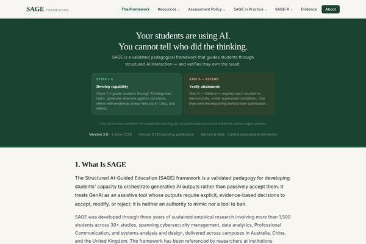
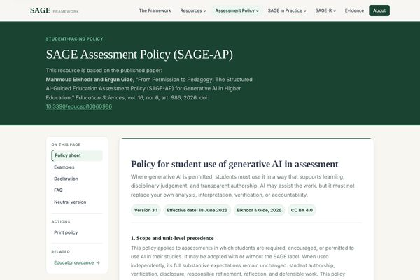
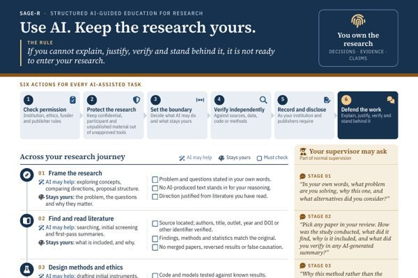
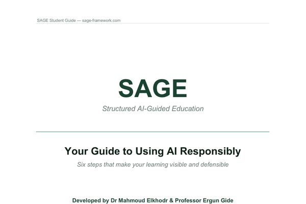
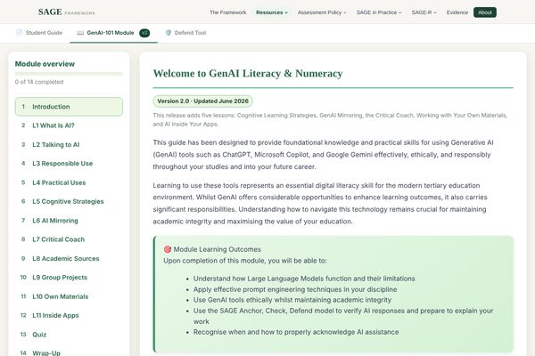
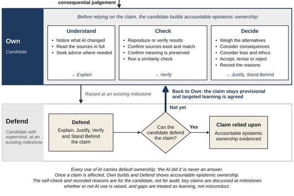
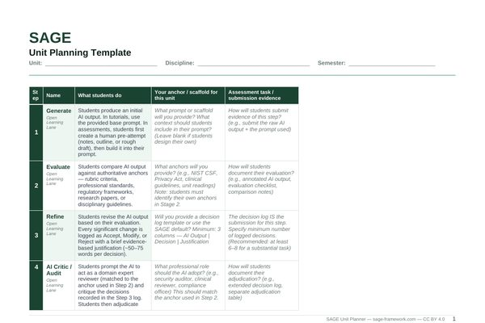
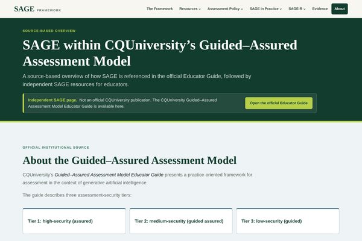
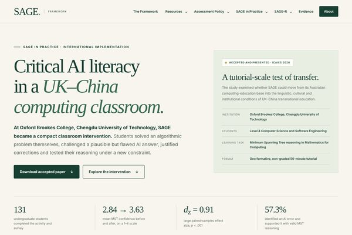
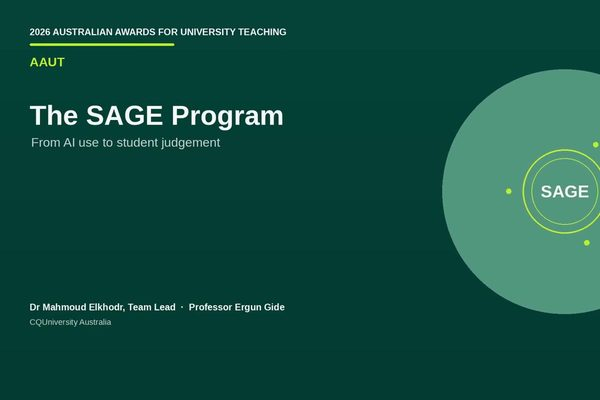

SAGE: Structured AI-Guided Education
SAGE is an open, research-informed program grounded in more than 40 peer-reviewed publications on generative AI in education. It brings together a pedagogy, an assessment policy and an extension for research supervision, developed by Dr Mahmoud Elkhodr and Professor Ergun Gide at CQUniversity Australia and refined in classrooms since 2022.
Visit sage-framework.com (opens in a new tab)How to cite SAGE
-

PedagogySAGE Pedagogy (opens in a new tab)
A six-step cycle (Generate, Evaluate, Refine, AI Critic, Reflect and Defend) that makes evaluation, refinement and reflection part of learning with AI.
-

Assessment policySAGE-AP (opens in a new tab)
Translates permitted AI use into clear expectations for authorship, verification, disclosure and defensible work, with student-facing policy text and educator guidance.
-

Research supervisionSAGE-R (opens in a new tab)
Applies Use, Own and Defend to higher degree research, with guidance for supervisors and candidates.
- Since 2022 classroom development
- 1,500+ students, 2,210 CQU enrolments
- 40+ peer-reviewed publications
- 3 TEQSA Knowledge Hub resources
Where to begin
The SAGE website hosts a much larger set of resources. A selection is linked here, and all are shared under a CC BY 4.0 licence. Explore the other resources on the SAGE website (opens in a new tab).
-

StudentsSAGE Student Guide (opens in a new tab)
A six-step guide to responsible AI use, with preparation for Defend. A PDF edition is available for printing and record keeping.
-

AI literacyGenAI-101 (opens in a new tab)
An eleven-lesson module on learning with AI, critical coaching, source checking and working with AI inside applications. It is listed in the TEQSA Generative AI Knowledge Hub.
-

Assessment assuranceDefend Tool (opens in a new tab)
Supports the design of proportionate checkpoints in which students explain, justify, apply or adapt their work, matched to the capability, the discipline and the cohort.
-

EducatorsDownloads and starter kit (opens in a new tab)
Guides, the unit planning template, the assessment rubric and other implementation resources, in PDF and Word formats.
Core framework papers
The full record, with study methods, limits and student dashboards, is on the SAGE evidence page (opens in a new tab) and the Publications page.
- STEM Education · 2026A pedagogy for AI orchestration and assessment assurance (opens in a new tab)The six-step framework and its distributed Assurance by Design architecture.
- Education Sciences · 2026From permission to pedagogy (opens in a new tab)The SAGE Assessment Policy (SAGE-AP) for generative AI in higher education.
- Discover Education (Springer Nature) · 2025The SAGE Framework for Developing Critical Thinking and Responsible Generative AI Use in Cybersecurity Education (opens in a new tab)The framework applied to a cybersecurity education setting.
Institutional and international use
Three SAGE resources are also listed in the TEQSA Generative AI Knowledge Hub as sector-wide good practice (see Publications).
-

Institutional incorporationCQUniversity (opens in a new tab)
The official Guided–Assured Assessment Model Educator Guide includes the SAGE cycle and Student Orchestration Levels. The Academic Learning Centre also lists GenAI-101 among its student resources.
-

International implementationOxford Brookes College and Chengdu University of Technology (opens in a new tab)
A SAGE-guided computing intervention extends the research into transnational education and disciplinary error checking.
-

Program overviewFrom AI use to student judgement (opens in a new tab)
A short video (2 min 58 s) introducing the development of SAGE, student learning and wider use, with the accompanying written evidence.
Citing and adopting SAGE
Suggested citation (IEEE)
M. Elkhodr and E. Gide, “The SAGE Framework: Structured AI-Guided Education,” Central Queensland University, 2026. doi: 10.5281/zenodo.18383951.
Developed by Dr Mahmoud Elkhodr and Professor Ergun Gide, CQUniversity Australia. Enquiries about pilots, implementation and collaboration are welcome through the contact page.